Follow me on insta!
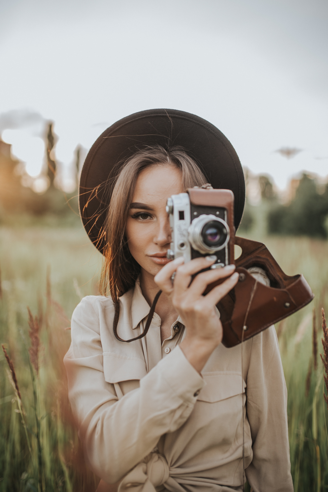
Hi and Welcome to my blog! It's my place to share my passion with the world!
Feel free to contact me to talk about photography.
My recent travels

The Sahara, Africa
Amazing sun, fantastic views... Read more

Tokyo, Japan
The heart of night life... Read more
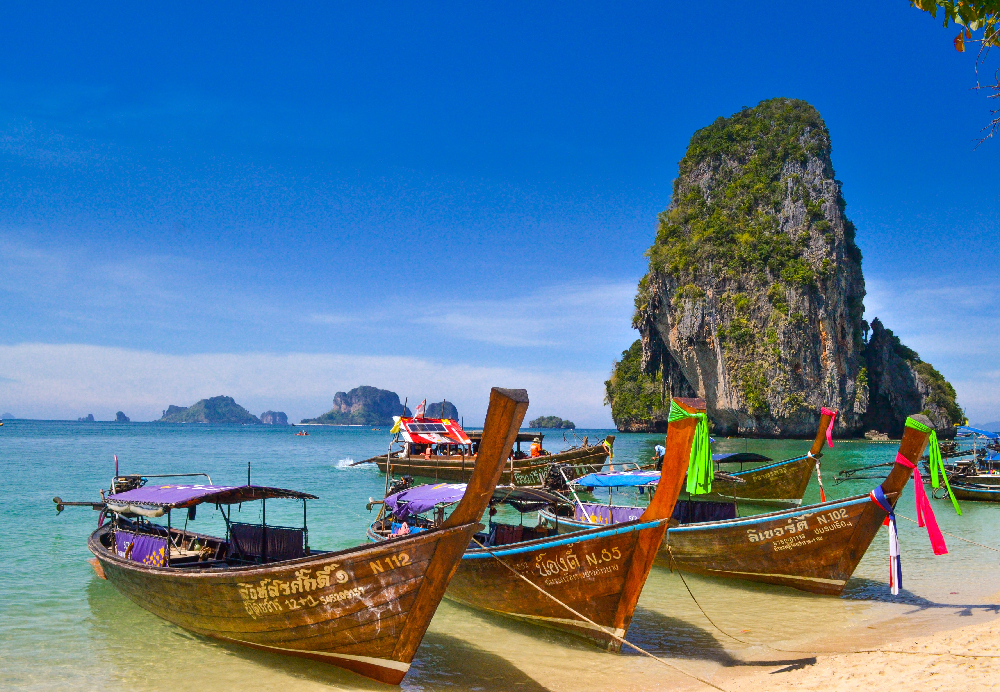
Ko Pha Ngan, Thailand
Only good vibes... Read more

Paris, France
Ahhh, the city of love... Read more
Black and white gallery
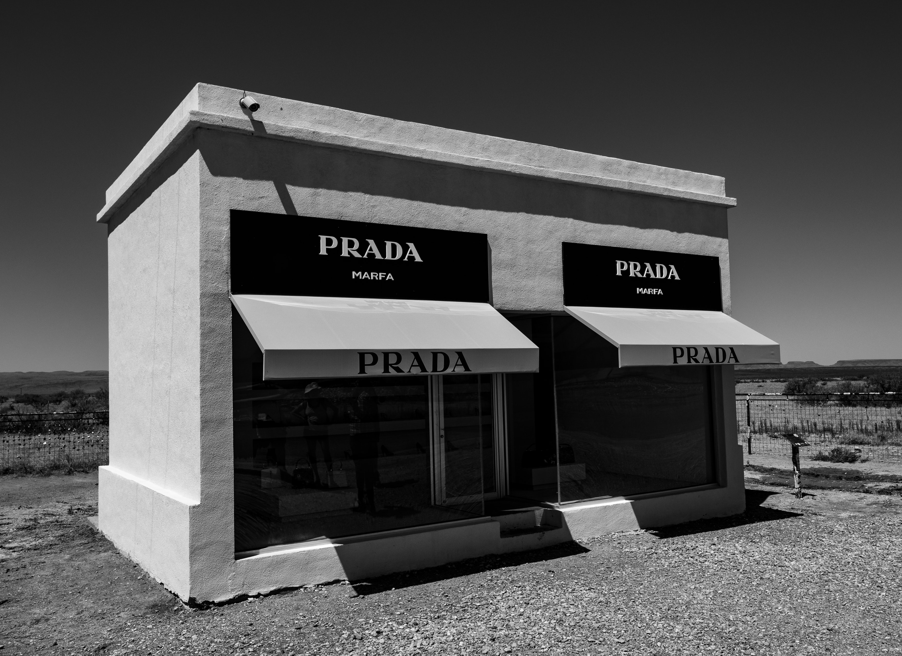

 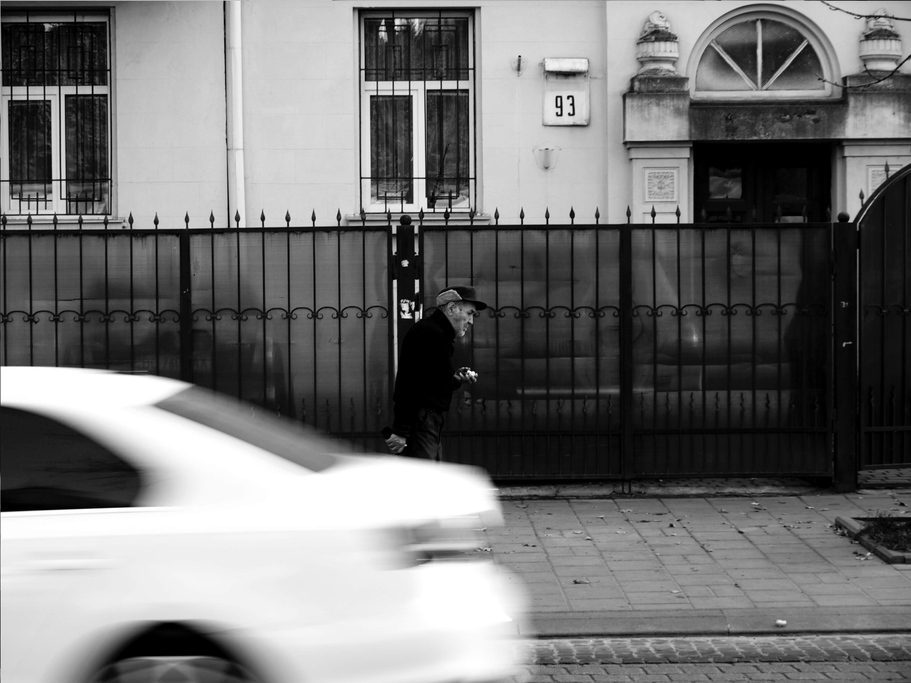
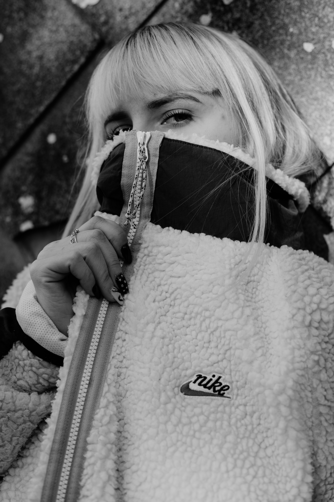
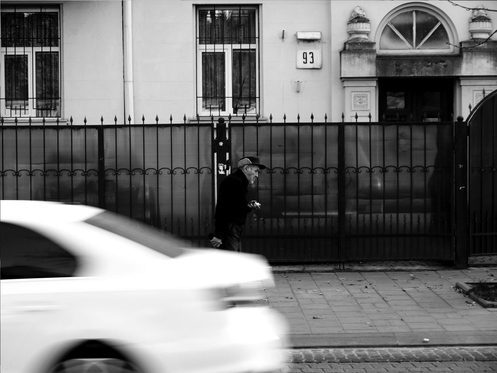
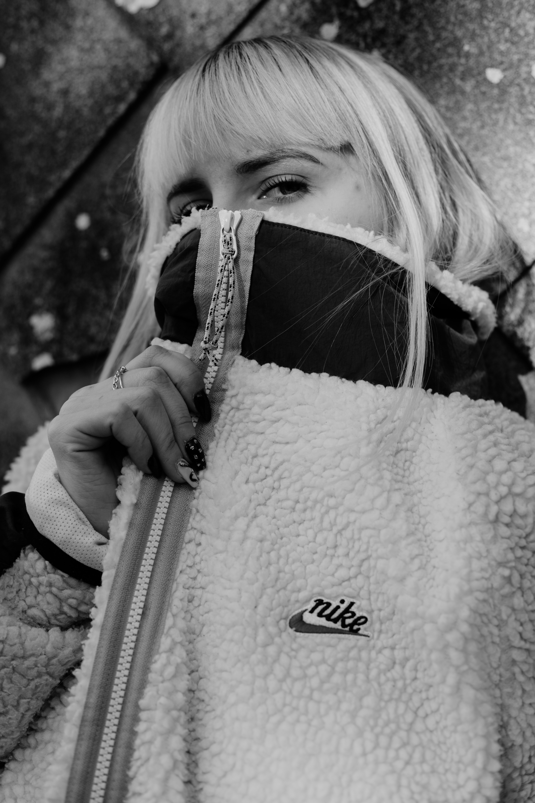
 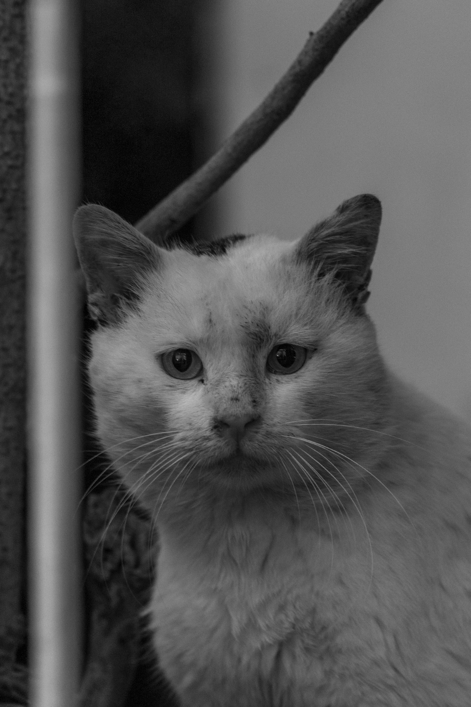
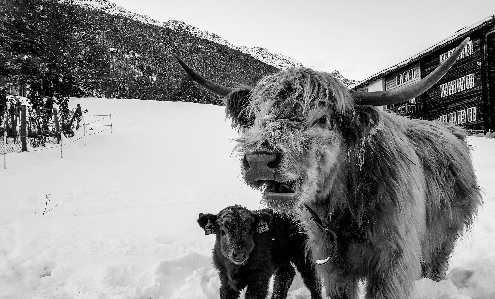
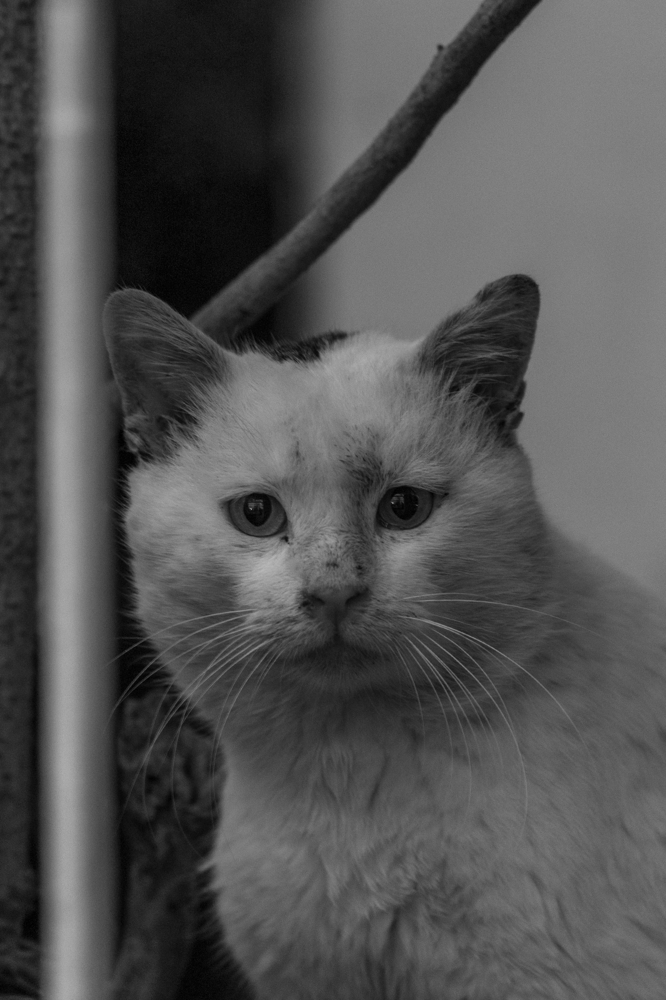
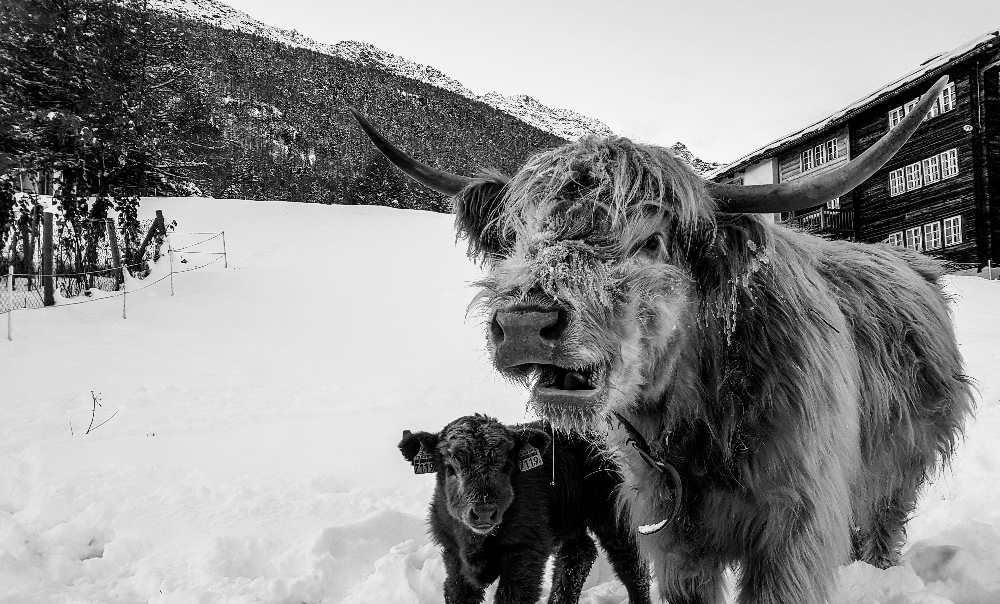
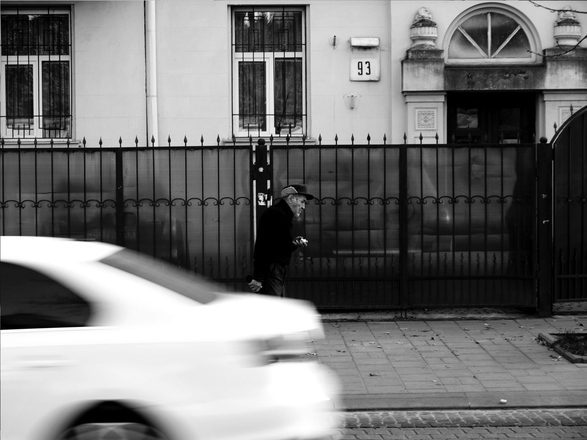
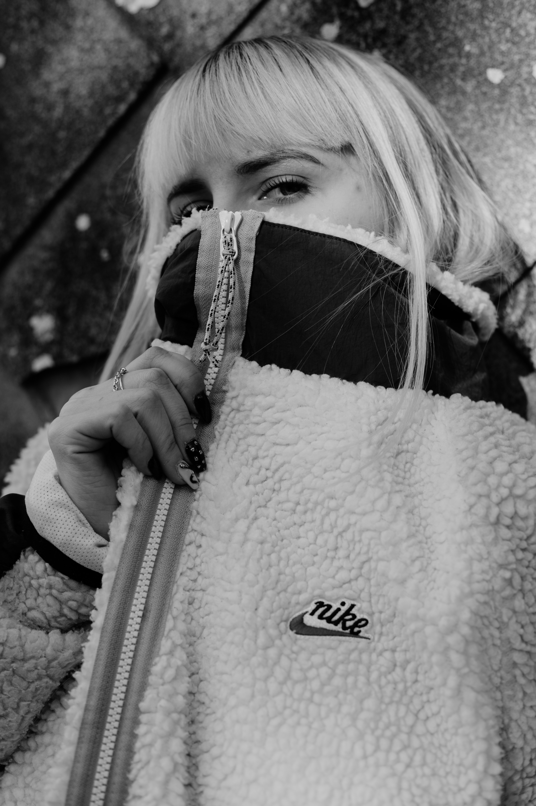
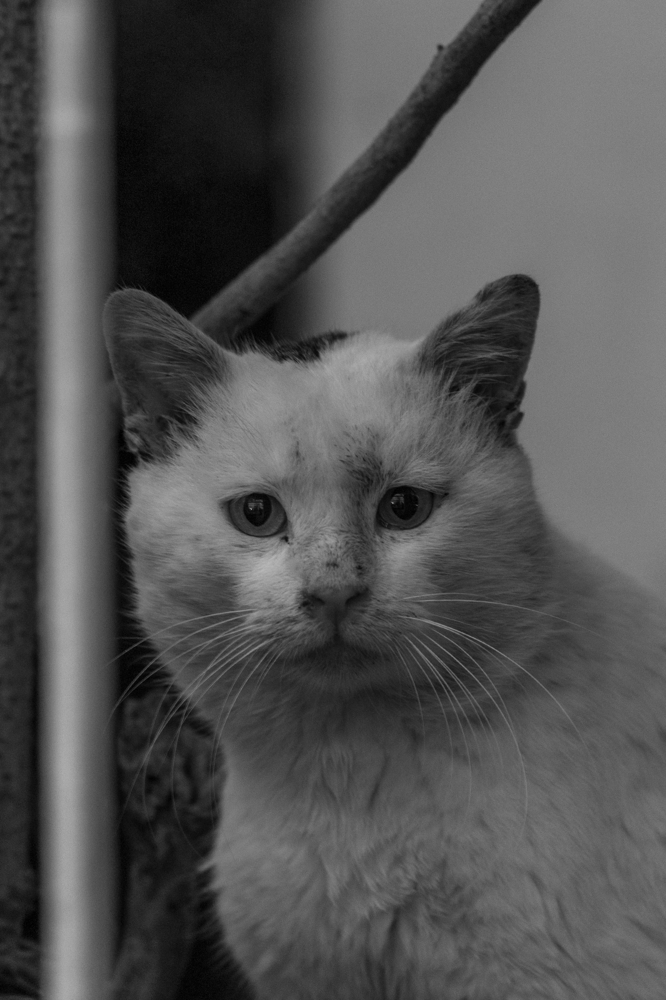
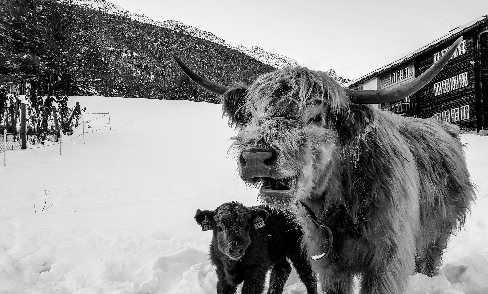